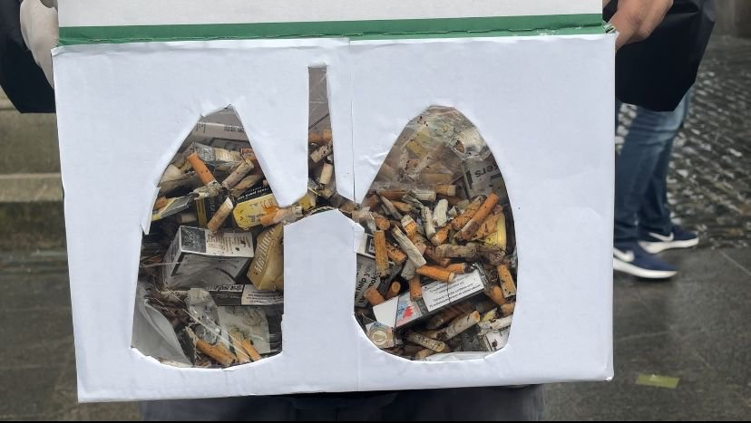
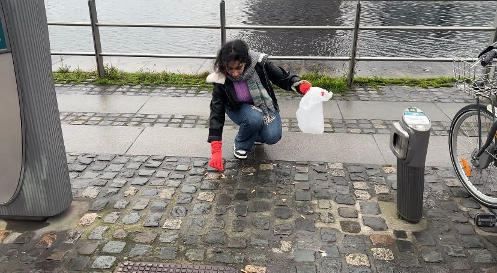
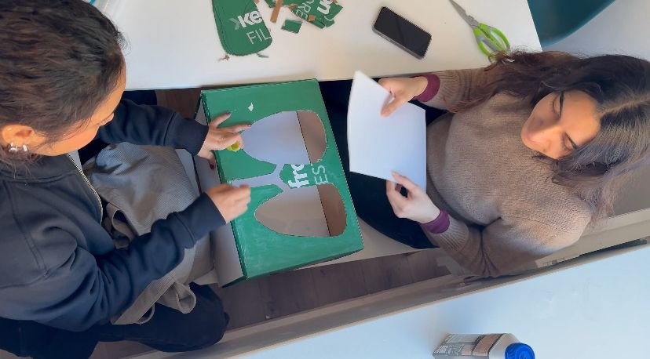
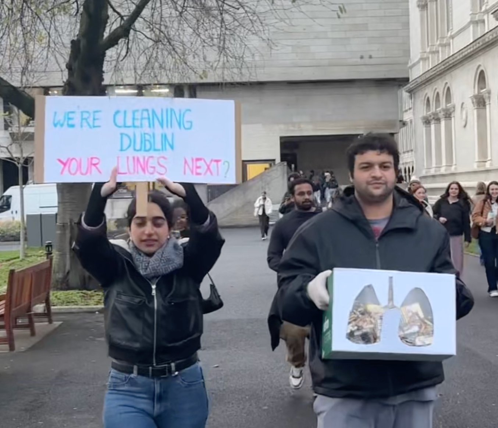

Watch the campaign video
Published on Healthy Trinity's YouTube channel.

A group project for the Marketing and Society module at Trinity. The brief was to design an advocacy video on smoking, aimed at EU policymakers, to push for stronger action on tobacco harm.
People know smoking is harmful. The statistics, the warnings on packs, the public health ads, none of it lands the way you would expect. But seeing hundreds of cigarette butts collected together in one place made it impossible to look away. That is the difference between knowing something and feeling it. The campaign was built around that gap.
I developed the core creative idea: building lung-shaped boxes and filling them with cigarette butts collected from the streets around Dublin. The visual was designed to be confronting in a way that data alone never is.
From there, the group turned the concept into a street activation and an advocacy video for EU policymakers. We collected the waste, built the boxes, and took the campaign onto Trinity's campus and across the city.



Published on Healthy Trinity's YouTube channel.
Insight is only as strong as how you make people feel it. A statistic about smoking deaths can be ignored. A pair of lungs made of butts cannot. This project shaped how I think about campaign creative now: start with what the audience already knows, then find a way to make them feel it for the first time.